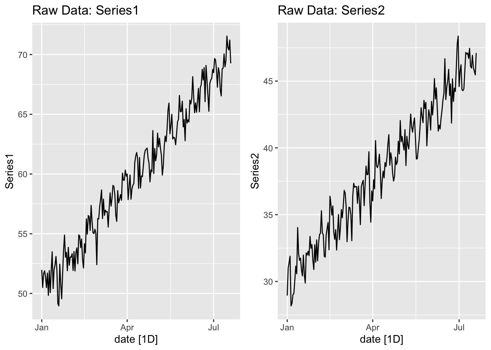
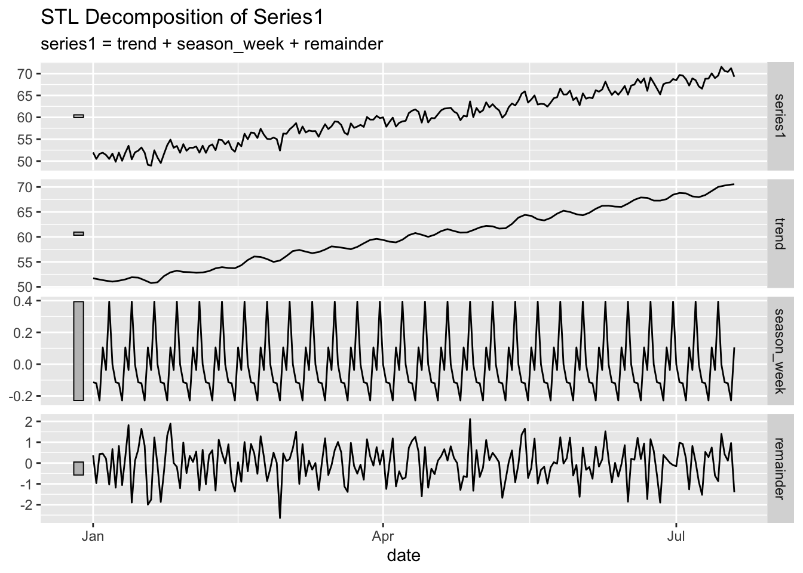
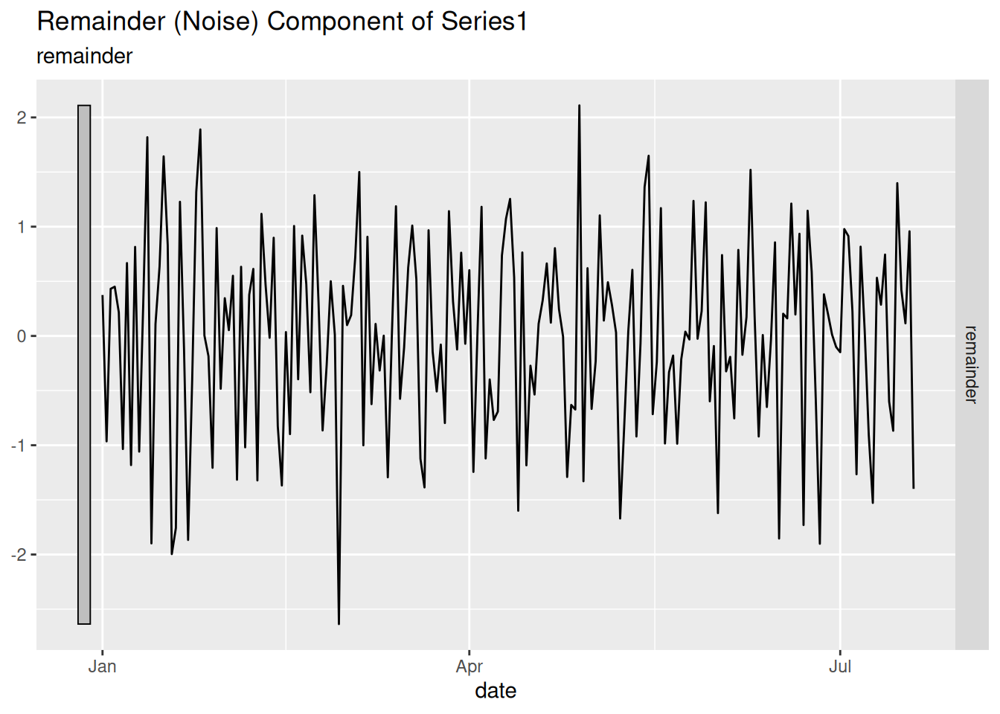
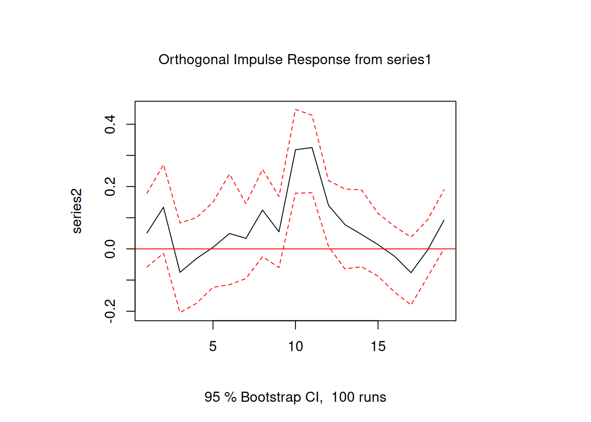
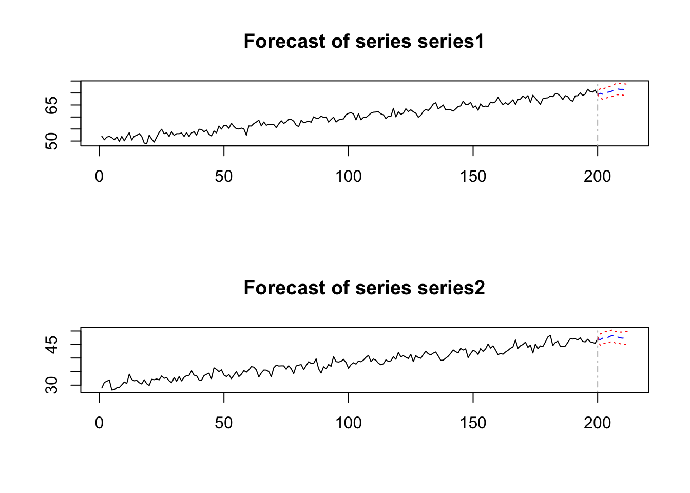

# Time Series Essentials, install if needed!
library(feasts) # Feature extraction & decomposition
library(fable) # Forecasting models (ARIMA, ETS, etc.)
library(fpp3) # Tidy time series dataseta
library(astsa) # Applied statistical TS methods from textbook
library(tseries) # Unit root tests & TS diagnostics
library(tsibbledata) # Curated TS datasets
library(quantmod) # Financial data retrieval
library(tidyquant) # Financial analysis in tidyverse
library(purrr) # Functional programming for TS pipelines
library(readr) # Efficient data import
library(gridExtra)
library(vars)Activity17
Review of concepts and applications covered so far!
- Exploratory Data Analysis and Preprocessing
- Visualization: Plot the raw time‐series data to inspect for trends, seasonality, and irregular fluctuations (including rolling means/variances).
- Transformations: Apply appropriate transformations (e.g. logarithmic or Box–Cox) to stabilize variance.
# Simulate a multivariate time series dataset with trend, seasonality, and noise
set.seed(42)
n <- 200
dates <- seq.Date(as.Date("2021-01-01"), by = "day", length.out = n)
trend1 <- seq(1, n) / 10
trend2 <- seq(1, n) / 12
season1 <- sin(2 * pi * (1:n) / 12)
season2 <- cos(2 * pi * (1:n) / 12)
noise1 <- rnorm(n, 0, 1)
noise2 <- rnorm(n, 0, 1)
data_df <- data.frame(
date = dates,
series1 = 50 + trend1 + season1 + noise1,
series2 = 30 + trend2 + season2 + noise2
)
# Convert to tsibble
ts_data <- as_tsibble(data_df, index = date)
# Plot raw data for series1 and series2
p1 <- autoplot(ts_data, series1) +
labs(title = "Raw Data: Series1", y = "Series1")
p2 <- autoplot(ts_data, series2) +
labs(title = "Raw Data: Series2", y = "Series2")
grid.arrange(p1, p2, ncol = 2)
- Decomposition & Stationarity Testing
- Decomposition: Use methods like STL to break the series into trend, seasonal, and remainder components.
- Detrending/Deseasonalizing: Remove or model the trend and seasonal components so that the residual approximates white noise. Stationarity Tests: Apply tests (e.g., ADF, KPSS) and difference the series as needed to achieve stationarity.
# Decompose series1 using STL (additive model)
stl_decomp <- ts_data %>%
model(STL(series1 ~ season(window = "periodic"))) %>%
components()
autoplot(stl_decomp) +
labs(title = "STL Decomposition of Series1")
# Inspect the remainder component as a proxy for stationarity
autoplot(stl_decomp, remainder) +
labs(title = "Remainder (Noise) Component of Series1")
- Model Identification & Fitting
- Lag Selection: Determine the optimal lag length (using criteria such as AIC or BIC) for an autoregressive or VAR model.
- Dynamic Modeling: Fit an autoregressive model (or a VAR for multivariate data) on the stationary series. Granger Causality Testing: Within the VAR framework, test whether past values of one variable significantly improve the prediction of another.
# For VAR, we need a multivariate time series object.
var_data <- ts_data %>% as_tibble() %>% dplyr::select(series1, series2)
# Lag Selection: Use VARselect to determine optimal lag order
lag_sel <- VARselect(var_data, lag.max = 10, type = "const")
print(lag_sel$selection)AIC(n) HQ(n) SC(n) FPE(n)
10 10 3 10 # Fit the VAR model with the chosen lag order
var_model <- VAR(var_data, p = 10, type = "const")
summary(var_model)
VAR Estimation Results:
=========================
Endogenous variables: series1, series2
Deterministic variables: const
Sample size: 190
Log Likelihood: -533.265
Roots of the characteristic polynomial:
1 0.9659 0.9659 0.898 0.898 0.859 0.859 0.8513 0.8513 0.843 0.843 0.8371 0.8371 0.8034 0.8034 0.7746 0.7746 0.619 0.504 0.504
Call:
VAR(y = var_data, p = 10, type = "const")
Estimation results for equation series1:
========================================
series1 = series1.l1 + series2.l1 + series1.l2 + series2.l2 + series1.l3 + series2.l3 + series1.l4 + series2.l4 + series1.l5 + series2.l5 + series1.l6 + series2.l6 + series1.l7 + series2.l7 + series1.l8 + series2.l8 + series1.l9 + series2.l9 + series1.l10 + series2.l10 + const
Estimate Std. Error t value Pr(>|t|)
series1.l1 0.122877 0.076589 1.604 0.110499
series2.l1 0.001737 0.074155 0.023 0.981337
series1.l2 0.137280 0.076629 1.791 0.075004 .
series2.l2 0.251250 0.072968 3.443 0.000725 ***
series1.l3 0.019961 0.077146 0.259 0.796153
series2.l3 0.242982 0.075094 3.236 0.001460 **
series1.l4 0.023500 0.076088 0.309 0.757815
series2.l4 0.097273 0.075932 1.281 0.201926
series1.l5 0.012457 0.075742 0.164 0.869564
series2.l5 0.029780 0.075707 0.393 0.694549
series1.l6 -0.100836 0.075910 -1.328 0.185848
series2.l6 -0.001456 0.074714 -0.019 0.984472
series1.l7 -0.130671 0.075732 -1.725 0.086275 .
series2.l7 0.089534 0.074633 1.200 0.231951
series1.l8 0.095971 0.075373 1.273 0.204667
series2.l8 0.072311 0.075100 0.963 0.336990
series1.l9 0.090060 0.073133 1.231 0.219861
series2.l9 -0.098305 0.074922 -1.312 0.191266
series1.l10 0.065699 0.074015 0.888 0.375991
series2.l10 0.105207 0.073140 1.438 0.152163
const 9.875173 2.622006 3.766 0.000229 ***
---
Signif. codes: 0 '***' 0.001 '**' 0.01 '*' 0.05 '.' 0.1 ' ' 1
Residual standard error: 1.039 on 169 degrees of freedom
Multiple R-Squared: 0.9695, Adjusted R-squared: 0.9659
F-statistic: 268.9 on 20 and 169 DF, p-value: < 2.2e-16
Estimation results for equation series2:
========================================
series2 = series1.l1 + series2.l1 + series1.l2 + series2.l2 + series1.l3 + series2.l3 + series1.l4 + series2.l4 + series1.l5 + series2.l5 + series1.l6 + series2.l6 + series1.l7 + series2.l7 + series1.l8 + series2.l8 + series1.l9 + series2.l9 + series1.l10 + series2.l10 + const
Estimate Std. Error t value Pr(>|t|)
series1.l1 0.12196 0.07744 1.575 0.11716
series2.l1 0.13703 0.07498 1.828 0.06938 .
series1.l2 -0.10699 0.07748 -1.381 0.16918
series2.l2 0.04090 0.07378 0.554 0.58004
series1.l3 -0.03307 0.07801 -0.424 0.67214
series2.l3 0.01991 0.07593 0.262 0.79352
series1.l4 0.01795 0.07694 0.233 0.81577
series2.l4 0.01205 0.07678 0.157 0.87548
series1.l5 0.05329 0.07659 0.696 0.48752
series2.l5 -0.01524 0.07655 -0.199 0.84241
series1.l6 0.03161 0.07676 0.412 0.68102
series2.l6 -0.07952 0.07555 -1.053 0.29405
series1.l7 0.12927 0.07658 1.688 0.09323 .
series2.l7 -0.08456 0.07547 -1.120 0.26410
series1.l8 0.01776 0.07621 0.233 0.81601
series2.l8 0.01472 0.07594 0.194 0.84653
series1.l9 0.22280 0.07395 3.013 0.00299 **
series2.l9 0.05090 0.07576 0.672 0.50259
series1.l10 0.19784 0.07484 2.644 0.00898 **
series2.l10 0.13111 0.07396 1.773 0.07806 .
const -8.85007 2.65124 -3.338 0.00104 **
---
Signif. codes: 0 '***' 0.001 '**' 0.01 '*' 0.05 '.' 0.1 ' ' 1
Residual standard error: 1.05 on 169 degrees of freedom
Multiple R-Squared: 0.9561, Adjusted R-squared: 0.9509
F-statistic: 184.1 on 20 and 169 DF, p-value: < 2.2e-16
Covariance matrix of residuals:
series1 series2
series1 1.07898 0.05327
series2 0.05327 1.10317
Correlation matrix of residuals:
series1 series2
series1 1.00000 0.04883
series2 0.04883 1.00000- Impulse Response Analysis
- IRF Computation: After estimating the VAR, compute impulse response functions to trace how shocks to one variable affect the system over time.
- Interpretation: Use IRFs to quantify the duration and magnitude of shock effects, complementing the Granger causality findings.
# Compute the impulse response function for the effect of a shock in series1 on series2 (12 periods ahead)
irf_result <- irf(var_model, impulse = "series1", response = "series2",
n.ahead = 18, boot = TRUE)
plot(irf_result)
- Diagnostics & Forecasting
- Residual Analysis: Check that the model’s residuals resemble white noise (e.g., via Ljung–Box tests) to validate the model fit. Forecasting: Employ the fitted model to forecast future values, reintroducing trend and seasonal components as needed.
# Diagnostics: Test for serial correlation in the VAR residuals (using 12 lags)
serial_test <- serial.test(var_model, lags.pt = 12, type = "PT.adjusted")
print(serial_test)
Portmanteau Test (adjusted)
data: Residuals of VAR object var_model
Chi-squared = 23.058, df = 8, p-value = 0.003291$serial
Portmanteau Test (adjusted)
data: Residuals of VAR object var_model
Chi-squared = 23.058, df = 8, p-value = 0.003291# Forecasting: Forecast the next 12 periods using the VAR model
var_forecast <- predict(var_model, n.ahead = 12)
plot(var_forecast)